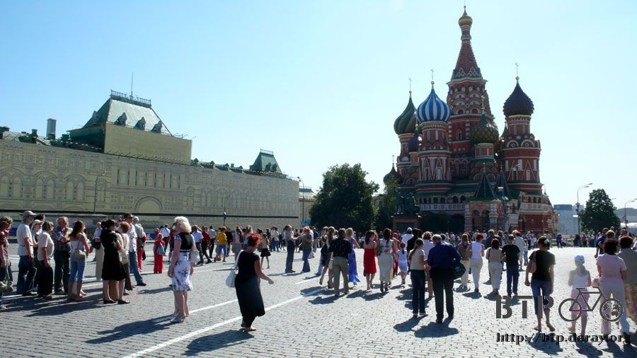
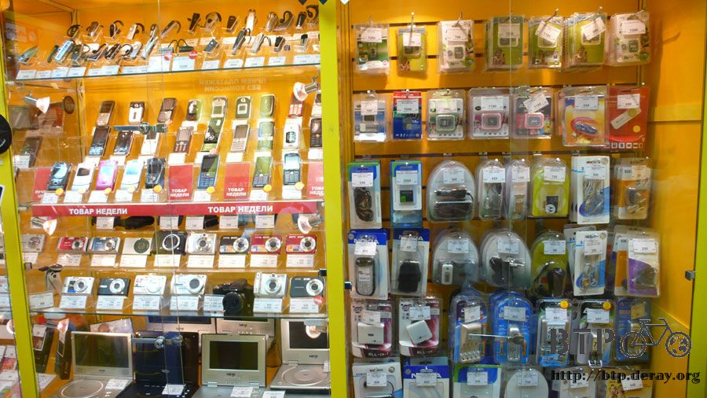
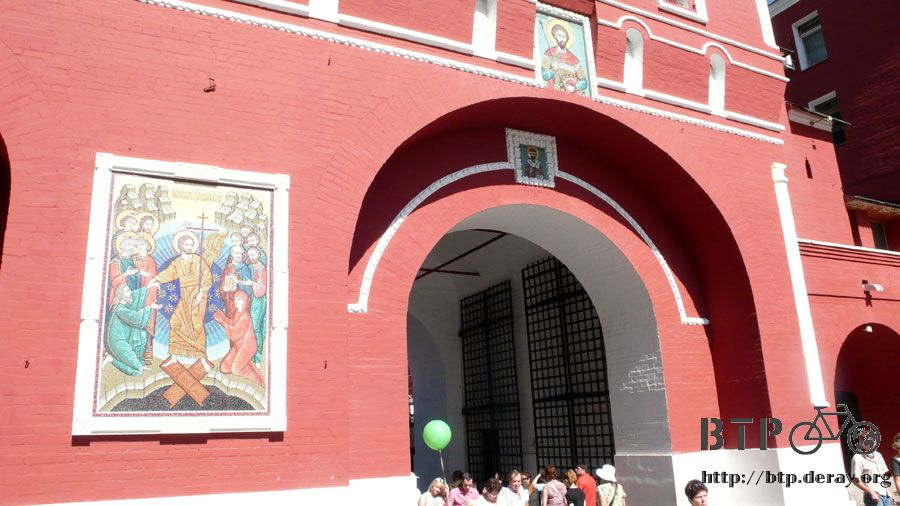

紅場～美麗與魔幻
從地鐵站的地圖先搞清楚自己的位置，弄懂的同時完全被自己打敗。
若是騎自行車，從宿舍只需要十分鐘的時間就可以到紅場，搭電車從進站到出站花了快一個小時，而且居然還搭錯站。
從這邊走到紅場的距離，跟從住的地方走過去是一樣的，這表示剛才搭的地鐵都是搭好玩的～反正搭地鐵真的很好玩！
第一次搭地鐵的目的地就是紅場，之前騎著小多來過一次，有點不過癮，這次改搭地鐵再來仔細遊覽一下。
本來的計劃是ㄧ出站就可以抵達要參觀地方的正門口，但是跟估計的不一樣，搭了老半天結果跑到城牆的外面。
將錯就錯，散步過去也是挺好的～這條馬路很好笑，斑馬線只畫了一小段，到馬路中間就沒有，該怎麼過馬路呢？
前面那個尖尖的塔就是紅場的圍牆，只要沿著圍牆走就可以進去裡面～大概要走二十分鐘左右。
過橋的時候發現橋的欄杆是用稻穗的圖案，工人和農人為主的型態也是社會主義的精神，資本主義就是商人至上啦。
走在外圍可以近距離的看紅場圍牆，只用紅色的磚瓦就能砌出這麼高聳又美觀的圍牆真是不容易。
有圓圓的塔，還有弓箭手可以射箭的地方，這邊在古代的時候真的是ㄧ座城堡的圍牆，也是莫斯科的發源地。

沿著莫斯科河和紅場的圍牆走，人行步道真是寬闊，跟馬路之間又隔著一段距離，非常安全，不需要鋪人行道的地磚走起來也很舒適。
行人的權益一點也不輸給路上跑的汽車，都市綠意規劃的也很棒，莫斯科有森林中的首都之美稱。
雖然不知道怎麼計算的，但是莫斯科的城市綠意覆蓋度高達八十%，相較於水泥叢林的城市，這裡真的很美。
愉快的漫步走，一下子就走到了紅場南端的入口，又看到顏色豐富的瓦西里大教堂，準備進入紅場囉～
今天是星期六，觀光客數量比起上次我來的時候暴增很多倍，拍照時要取景難度大大增加，照片中的閒雜路人很多，我已經盡力了~_~
抵達紅場的時候是十一點十五分，早起的鳥兒有蟲吃，早一點到紅場來觀光是有好處的，等一下你就知道為什麼。
這座鐘樓頂端有一個五星芒，它是會旋轉的，星芒的五個角都裝飾了紅寶石，聽說一顆有一噸重(騙鬼呀)。
紅場的廣場由幾座建築物所包圍起來，這是其中的一棟，等一下再介紹，左邊是主體建築，右邊那一棟也是它的一部分，目前正在施工。
施工中的建築物在外圍牆壁上貼上平板，上面畫有和原始建築物相同的花紋，這樣就不會一眼看到它施工中的殘破的樣子，保持了紅場整體的美觀。
之前都是走馬看花，看過也不知道這是什麼東西，今天要來知識大補給～讓你看完這一篇就變成紅場達人。
先從瓦西里大教堂開始介紹，先來一張近照。
瓦西里大教堂以前又稱為聖母教堂，有一位東正教的修士名叫瓦西里在此苦修終生，便以他為名。
這棟華麗的建築藝術是伊凡大帝下令建造的，建於西元一五五二年，它是古俄羅斯建築學最為璀燦和著名的里程碑。
這棟教堂幾乎已經成為莫斯科的精神象徵。
興建的原因是因為伊凡大帝費時八個月的時間終於攻下了喀山，再度擴張了領土。
伊凡大帝又稱為恐怖伊凡，有多恐怖呢？
以這棟美麗的建築物來講，興建完畢之後伊凡看了很滿意，就把負責設計的建築師找過來，不是要獎勵他，而是挖掉他的眼睛。
因為怕他在其他地方蓋出比這棟教堂更美麗的建築，竟然如此殘忍下此毒手，有沒有很恐怖？
教堂一共有八個色彩豐富的塔，分別都是獨立的教堂，洋蔥頭的造型舉世聞名，中間最高那一棟則象徵伊凡大帝至高無上的地位。
頂端至底部高四十七點五公尺，不同於歐洲教堂有正面、側面之分，瓦西里教堂每一面都是正面，從任何角度看都非常完美。
說這棟建築是教堂，其實它的內部有些簡陋和狹小，幾乎完全以豐富顏色和華麗的外型取勝，與其說是神的處所，不如說是給君主賞玩的藝術品比較適當。
古時代這邊是宣讀沙皇令的地方，在台上宣讀處死令，台下則是圓形斷頭台伺候。
目前這邊已經開放參觀，票價依照你帶進去的器材而定，相機一百三十盧布，攝影機一百五十盧布，買票排隊排到死。

如何？有沒有比一句『哇～這棟建築物看起來很漂亮』來得有知性和學養？
繼續再來，瓦西里教堂前面的是米寧和巴札爾斯基紀念碑，一八一八年完工落成。
這是一座青銅塑像，由雕塑家馬爾托斯設計完成，是為了紀念這兩位公爵在一六一二年帶領俄羅斯人民戰勝波蘭侵略者。
塑像的下方正反兩面都有浮雕的圖案，一個又一個的觀光客跳到這邊來拍照，一個拍完馬上換下一個。
當我在塑像前面舉著相機手痠得要命等待空檔拍照的時候，沒有人想說禮讓我一下，我比你們早排隊耶！
好不容易還是給我拍到一張乾淨的照片～去你的觀光客，通通去吃大便。
當所有人都在正面拍照拍個不停的時候，後面就冷清許多，輕輕鬆鬆就拍到背後的浮雕。
被打得落荒而逃、抱頭痛哭、跪地求饒的就是波蘭人～公爵大人好威呀！
一開始以為是錯覺，感覺遊客數量來上次還的時候還多，廣場很寬的緣故還是不會顯得很擁擠，可是遊客數量真的暴增一倍。

大家都在廣場上拍照，我就在廣場上拍大家拍照的樣子，記錄那麼多陌生人到此一遊，究竟有什麼意義呢？
可是要我站在景點前面擺個姿勢拍照，我還真的不知道該怎麼做。

不只觀光客的數量很多，星期六連學校的小朋友都來校外教學，老師剛剛講解完列寧的故事。
同樣年紀的小朋友發育差好多。有的看起來我還以為她是老師~_~
觀光客多絕對不是我的錯覺，一路上一直聽到中文導遊的講解聲，有點想跟著聽又想離遠一點，很掙扎。
導遊負責幫團員拍照，在這之前還要先數人頭，看有沒有全部都到齊，要是漏了一個到時候小費就少領一份。
如果你是跟團旅行，跟導遊說可不可以讓你自己去搭地鐵晃一晃，導遊會說拜託放過他，別給他找麻煩，想體驗莫斯科地鐵的請安排自助旅行～
導遊說，有沒有比幫團員拍照還要更遜的工作？
當然多得很，比如說這個顧行李的，大包小包通通堆在前面，萬一被幹走一個那就比沒小費還更慘。
包包通通丟在這邊，團員跑哪去了？
答案是去在裡面參觀列寧墓。
講解再來！
列寧墓，這座墓由花崗岩和黑色長石建成，列寧的遺體放在水晶棺木裡，身上覆蓋前蘇聯的國旗。
墓的正前方有一塊黑色的大理石雕刻有列寧的名字，光是這塊石頭的重量就達六十噸。
開放參觀的時間一星期只有四天，每天只有短短的三小時，時間是早上十點到下午一點，這附近也有一間列寧博物館。
墓的上方是主席台，當有重要儀式時候，現任的總理就會站在列寧墓上講話和觀禮。
列寧墓和紅場的圍牆之間有十二塊墓碑，史達林這些歷任的蘇聯領導人都埋葬在其中。
進去裡面不能帶大件的行李、要經過紅外線探測器、搜查隨身行李、禁止拍照、禁止手插口袋、禁止戴帽子、禁止飲食、禁止嬉笑打鬧，連說話也不行。
紅場的旁邊，正對著列寧墓，這一棟又大又長又漂亮的建築是什麼？
如果我跟你說是百貨公司呢？
可惡，居然不相信我，紅場又不一定只能有教堂跟博物館和墳墓，很久以前紅場本來就是一個貿易廣場。
而這一棟就是鼎鼎有名的『吉姆百貨』，從十五世紀就做生意到今天了。
雖然它曾經失過火燒光光，也被政府直接收走變成公家機關，但是到今天它又恢復成百貨公司，是整個莫斯科最重要的百貨商場。
正門很多人擠在那邊，不是特賣會或是在搶福袋，單純就是因為進不去，正門耶～最重要的正門只有一扇小小的旋轉門，真是獨特。
進去之後完全讓你對百貨公司的印象改觀，台灣百貨公司一進去第一眼看到是啥米？化妝品？珠寶首飾？
吉姆百貨的第一眼印象的是這個～
有沒有嘴巴張開開『哇～』很大的感覺，這邊是室內喔，從外面看起來好像很不透光，事實上裡面採光超好的！
噴泉的四方都是百貨市集，看看那採光良好到幾乎透明的天花板，目前只有霍格華茲施過法天花板可以和這個相比。
要是你有知道什麼品牌是這邊找不到或是沒有賣的，只能很抱歉的跟你說那個牌子太小了，還不夠國際化。
連不怎麼喜歡逛百貨公司的我都覺得走在這裡好開心～
商場為三層建築，採光屋頂的長度足足有四百公尺，吉姆百貨的設計是要容納一千間商店。
採用十九世紀火車站的設計風格，這邊賣的東西全部都貴到不可思議，不能用常識去理解的價錢。
就算是觀光客我也不相信能在這裡買多少東西，拍拍照就當來過了，吉姆百貨的消費主力是莫斯科的大富翁們。
在這邊閒晃的時候看到咖啡廳，瞄了一眼菜單，卡布奇諾一杯七百五十盧布，折合台幣近千元，你喝給我看。
這邊有一個很有趣的現象，商店的店員大多是年輕貌美的小姐，然後搭配西裝筆挺、彪形大漢的保鑣。
逛著逛著突然發現這邊有點像『死亡復甦』中的場景，有玩過的人一定有同感，真的超像的～Capcom該不會有到這邊來取景找靈感吧？
(補充：死亡復甦是Xbox360上面一款在百貨商城裡屠殺殭屍的噴血動作遊戲)
這邊是側門，一個人都沒有，側門還比較好走，不是旋轉門，但入口依然很小一個，不想讓客人出來的感覺。
拍完這一張照片記憶卡就滿了，右邊是耶穌升天大教堂、中間是國家歷史博物館。
512MB，八百萬像素只能拍一百二十張照片，早上出來在地鐵站就拍個不停，紅場更不用說。
看著記憶卡已滿的提示訊息，該怎麼辦呢？
刪照片很痛苦，要刪那個顧行李的導遊還是地鐵站的裝潢，每一張都是因為有意思才拍的，實在捨不得刪，而且就算刪掉也才多出一張的空間而已。
那不然就是現在搭電車回宿舍，存完照片再搭電車過來一次～別鬧了，我連紅場都還沒走完又要掉頭回去。
買新的記憶卡吧，先應急再說～贊助的不知道何時才能拿到手。
左邊的店可以買記憶卡，右邊這種商店真的很有趣，雖然我在俄羅斯幾乎天天都可以看到，但還是覺得很新鮮。
俄羅斯不知道怎麼搞的，有點封閉，像那種可以自己拿東西放到籃子裡的超市，是完全不存在的。
在俄羅斯要買東西一定要店員自己拿，客人一定要付過錢之後才能摸到商品，不然門都沒有。
這種商店就是最好的示範，所有的商品通通放在展示櫥窗裡面，通通看得到但是摸不到，要買東西就要透過一個小小的窗口跟裡面的店員講。
因為低效率的交易方式，動不動就是大排長龍，一個服務完才能換下一個，即使已經漸漸趨於開放的今天，這部分仍舊沒變。
是怕被搶嗎？不然何必這麼小心翼翼，把客人都當成賊一樣看待。
如果在莫斯科開一間台灣最普通一般可以看到的便利商店，搞不好會引起全市話題。
『那間店可以自己拿東西結帳耶！』『還沒付錢真的可以先拿嗎？』
搞不好開幕第一天就被全店搶光光也說不定，有興趣的大老闆們可以來投資看看。
扯得很遠，我只是來買記憶卡而已，進到店裡面，櫥窗展示著所需要的東西，這跟外面那個商店一樣意思呀，看得到拿不到。

看上面的標價，1G的記憶卡要價七百九十九盧布，2G的則是一千一百九十盧布，價差四百塊，容量差一倍。
思考了一下還是決定買2G的，就不信買其它牌子的還會那麼爛，動不動就格式錯誤。
指著櫥窗裡的記憶卡跟店員說我要買這個，她就過來、打開櫥窗的鎖、確認我要的哪一個然後拿出來，想借看一下產品背面的說明都不行，因為還沒付錢。
付錢買過記憶卡，一張全新的2G記憶卡又可以再拍四百八十三張照片，相當於十八捲底片，努力的拍滿它吧。
換上新的記憶卡接著往紅場走，這個是耶穌復活之門，講解的好累，以前這邊是官員走路進克里姆林宮上班的地方。
我也不知道跟耶穌復活有什麼關係，但是大多數人都會走這邊進入紅場，不然就是像我走南邊的瓦西里教堂進來。
這座門有兩扇，今天只開右邊那一扇而已，它位於耶穌升天大教堂跟國家歷史博物館中間，請參照上面那一張記憶卡拍滿時最後的照片。
走近一點看，兩個門中間是聖經故事的馬賽克拼圖，門的上方也是耶穌頭發光的圖案。

旁邊的歷史博物館有穿古裝的人可以合照留影，每天穿的衣服都不一樣，也有穿軍裝打扮成史達林的，今天也看到打扮成毛澤東還自備五星旗的老中。
拍照要錢喔，費用不明，喜歡拍照的人應該會覺得跟這些人合影比跟建築物合影還有意思吧。
穿越耶穌升天之門之前回頭一看，遊客真的越來越多了，紅場開始有水洩不通的感覺，還好已經走完一趟。
幾步就走完這個拱門了，有種要去克里姆林宮上班的感覺，遊客好多呀～救命呀，趕緊逃離這邊。
過了升天之門後會看到一個小小的迷你教堂，可以去裡面參觀，難得進到有屋頂的地方是免費的。
裡面我也不知道是什麼東西，網路找資料也沒有，所以看看就算了～
小教堂的旁邊是一間商店，販賣的都是耶穌相關的紀念品，居然也是開一個小窗口的商店，這樣很難做生意耶，所以都沒人光顧。
買不起吉姆百貨的東西沒關係，走過升天之門之後就算離開紅場了，這邊有很多的路邊攤在賣紀念品，價錢還算平實，如果你精挑細選的話肯定能帶點東西回去。
不同於阿爾巴特街那種有屋頂的棚子小販，這邊都是一張大桌子就露天賺觀光客的錢了，警察也不會趕，猜想紅包塞得很多才有辦法在這邊擺攤。
下面這一張照片是每一攤小販會賣的商品，每一攤賣的東西差異都不大～不殺價的人是笨蛋，切記切記。
英文在這邊是可以通的，但是當你用英文問How much？的時候，你所得到的價錢已經比用俄文問還要貴上一截。
觀察得夠久就會發現同樣的東西售價是因人而異，上面那個會下雪的玻璃小屋賣得超好，一個賣完從桌子下面馬上又拿出一個來補。
同樣的東西老闆開價從五百盧布、七百盧布、四百盧布一直在變，而且非常狠，不給客人殺價，不買就拉倒。
根本不是這個東西值多少錢，看在老闆眼裡是你值多少錢？
這就是之前提過很毛的帽子，除了這個形容詞之外不知道該怎麼講～
這個很酷，可以折疊收納的杯子，收起來只有兩公分的高度，打開蓋子一甩就還原成一個杯子，方便好攜帶，詢價的結果是兩百盧布，謝謝再連絡。
這邊警察很多，軍人也有，和之前一樣都沒有在值勤，乘涼聊天過得很舒服。
常會聽到說不要拍俄羅斯警察的照片，會惹麻煩，這一路上不知道拍多少張了～拍張照而已沒那麼恐怖。
這個很值得說明，是在進入紅場之前的地方，腳底下有一個圓形的銅板，每個人都會站在這裡轉一圈，然後拿銅板朝後頭丟。
只要跟丟硬幣有關的應該都和許願脫不了關係，今天不只觀光客很多，一堆新人到處趴趴走～在紅場拍婚紗照。
可惜不是每一對都郎才女貌，這一對還算不錯，可以當成說故事的照片。
投擲的硬幣面額都很小，十分錢的硬幣丟得滿地都是，有些像乞丐的老婆婆會在這邊撿硬幣，看起來很可憐。
新娘右手邊那位包頭巾穿紫色裙子的婆婆就是在撿硬幣的，新郎左手邊那位提著塑膠袋的也是。
十分錢耶，撿十個也才一塊錢而已，要買一條麵包吃的話得在這邊撿一百個硬幣才有辦法。
而且當有人許願完畢，老婆婆們出來撿硬幣的時候，旁觀的人都會流露出嫌惡的眼神，其實何必把許願搞成這樣呢～
一直覺得遊客很多，的確多到紅場進行管制，進入要排隊呢，實在太誇張了，假日的時候到底湧進多少人潮。
摸著女朋友屁股的男生說要進去紅場，警察叫他去排隊，男生就說『好呀～排就排～有什麼大不了的。』
的確是沒什麼大不了的，只～是～要～排～這～麼～長～的～隊～伍～而～已～
所以前面才說早起的鳥兒有蟲吃，早一點來參觀紅場人比較少，過中午之後就擠爆了。
離開紅場轉到克里姆林宮前的廣場，這邊是上次騎小多的時候沒有進來的地方。
一進去就看到一堆觀光客聚集在圍牆邊，不用說也知道肯定是景點。
有兩個衛兵在站崗，中間像是墓碑，還燃燒著永遠不熄滅的火焰，這裡是無名英雄墓。
這邊周遭有很多的獻花，外國很多使節貴賓也會親自到這裡獻花，究竟偉大在哪呢？
二戰中，蘇聯軍隊死了九百多萬，平民死了一千多萬，加上受傷的，蘇聯全國成年男子有一半死亡或者殘廢，剩下的大概都是太老太弱不能上戰場的。
這邊修建於一九六七年，紀念因二戰而逝去的生命，墓前的火從那一天至今從來沒有熄滅過。
墓上的碑文寫著『你的名字無人知曉，你的功勛永垂不朽。』
類似這樣的無名墓世界各地很多地方都會看到，但是像莫斯科這麼高規格重視的就很少見，這兩個衛兵本來是在列寧墓那裡站哨，後來就哨點改在無名墓。
列寧何許人也？居然比不上這些叫不出名字的英雄，連衛兵都被搶走。
莫斯科人不希望過去的英雄被遺忘，所以常常都會來獻花，特別的是結婚的新人，幾乎每一對都會到這裡獻花。
傳統的想法，結婚是喜事、掃墓是喪事，但俄羅斯人可不這麼想，在這邊則是用悼念逝者的方式來祝福新人，沒有這些無名英雄就沒有今天的莫斯科。
介紹完畢之後就要來嚴格的了！
當過兵的看到有人在站哨都會想刁一下服裝儀容，尤其是憲兵出身的，來看看莫斯科第一號哨點的衛兵服儀怎麼樣。
這個就不知道是什麼了，很多小鬼頭在拍照，裡面進不去，就是一堆石頭牆壁而已。
這些花種得真是漂亮到不行，是現在來時節剛好嗎，花卉都比美的綻放著～無數的人不斷的進到裡面來留影拍照。
為了拍下這一張沒有人在花園裡的照片，我已經創下站在同一個點拿著相機最久的紀錄。
除了『你好』『謝謝』『再見』這三句俄文，我很需要再多學一句『麻煩讓讓～』
這張照片是我兜了一圈之後從對面往回拍的。
幾乎隨時、每一秒鐘都是這麼多人在花園裡面，比照上面那一張照片，可以想像有多難拍嗎？
這邊不知道是要進去參觀什麼東西，又在排隊買票，我一生最討厭兩種事情，一個就是排隊，另一個就是插隊。
排那麼多人是要幹嘛？走到這邊的時候才想起來我忘記去參觀國家歷史博物館，本來是當成今天的主要行程，結果完全忘記。
忘記就算了，值得去參觀的地方實在太多了，國家歷史博物館裡面有四百五十萬件展出品，看完我也昏了。
繞過這個長長的隊伍繼續往前走，天殺的又是在排隊～
走到這邊就回頭，繞一個圈從入口出去，這裡怎麼看都像是公園，遊客輕鬆的散步、坐在草地上野餐、大家都怡然自得的樣子。
真不敢相信這裡是鐵幕國家總統府－克里姆林宮前面的廣場，整個也開放得太海派了吧，莫斯科也許不像大家想的那麼封閉了。
總統府前廣場都能開放成這樣，商店怎麼還是那麼封閉？
四匹馬的噴泉，後面是水噴泉的走廊，走過那裡肯定很涼快～水池中有四匹大黑馬，搭配上噴泉相當漂亮。
走到正面補一張，蠻有氣勢的～莫斯科很多雕像都有馬這個元素。
上面這張照片看起來沒什麼人在玩水，大錯特錯喔～其實這邊看起來是像這樣子的。
怎麼到處都是人，拍照很辛苦耶～光是這張照片很擋鏡頭的就有二十二個人，要拍乾淨的照片實在太困難了。
肚子有點餓，這邊居然有熱狗攤，但是價錢有點貴，一樣的東西為什麼在旅遊景點買都是兩倍價格？
看這個小鬼吃熱狗很好吃的樣子，別太得意，那是你爸爸買給你的～你也買不起
脖子上掛一條蛇的大叔，就是那種付錢跟蛇拍照的生意，瞧他數錢樂不可支的樣子，觀光客的錢真是好賺呀。
旁邊是小水道，淺淺的水底下鋪著藍色系的磁磚，放了許多的塑像，水有點髒因為不是流動的。

走完這邊就逛完一圈啦～離開大門紅場就算結束，不進任何建築物參觀的話，一毛錢也不用花就可以看這麼多的東西。

走了很多路，拍很多照片，肚子很餓可是小販的食物很貴，唯一不會因地漲價的就是這個了。
在烏魯木齊吃肯德基、在莫斯科吃麥當勞，同樣的速食餐廳都規定自己這趟行程只能進去一次，這次就要用在莫斯科了。
不知道巴黎有沒有頂呱呱@@"還有別的速食連鎖店嗎？
這一間麥當勞年營業額應該破好幾個億，地段極好、生意超好、裡面滿到快塞不進去，在野餐的人吃的都是這裡外帶的食物。
有在麥當勞打過工的人應該很能體會這些員工現在的心情吧，客人是永遠服務不完的，店經理都要親自來炸薯條才應付得過來。
麥當勞點餐很簡單，直接講英文就好了，拿著餐盤果然找不到餐桌坐下來吃飯。
這麼滿的店我在奢望什麼，叫他們開樓上嗎？這邊只有一層而已，只好站著等快吃完的人離開才有位置坐。
莫斯科麥當勞有點奇怪，東西吃完不用自己拿去丟，只要放在桌上就會有店員來收拾。
除了櫃台的員工很忙之外，用餐區也是兩三個員工不停的在走來走去，收拾桌上的垃圾，這邊還有一樣東西是我不熟悉的，找不到麥當勞叔叔。
看著這一盤的食物，剛才被收一百三十九盧布，核對一下收據。
麥香堡五十二元、可樂三十三元、薯條四十四元，最底下還打了一個十元，看半天才知道原來是番茄醬。
連番茄醬也要錢呀 =..= 莫斯科真的是什麼東西都要錢，越來越體認到這句話的意涵。
完成富有知性的紅場之旅，再度踏進地下的迷宮世界，搭著地鐵往下一個目的地走，今天遊記的第三段～待續

繼續閱讀：8.11 穿越地底與河流